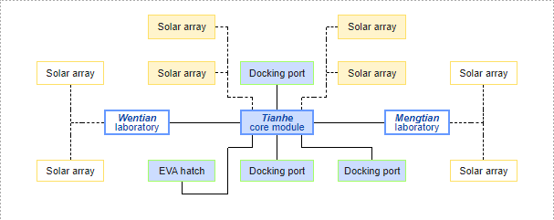

-
Sketching/Observational Exercise
-
Space/Universe
Areas of research: new advancement in space technology
Research question: Since it is the first space station launched since 1998, how can I raise people's interest in China's new space station?
Data drawing: a 3D interactive tour of the space station

image source: https://zhuanlan.zhihu.com/p/105876206 -
Mental Health
Areas of research: mental health issue detection
Research question: How can I make it easier for people to detect their own mental health issues and get help?
Data drawing: a phone app to track mental health history

-
-
Inventory/Connect Exercise
-
Inventory
-
Space/Universe - new advancement in space technology
Chinese space station length: ~ 20.00m, diameter: ~ 4.20m
Structure:

image source: https://en.wikipedia.org/wiki/Tiangong_space_station -
Mental Health - mental health issue detection
Zung Self-Rating Depression Scale and its validity: Biggs, John T., Laurence T. Wylie, and Vincent E. Ziegler. 1978. “Validity of the Zung Self-Rating Depression Scale.” British Journal of Psychiatry 132 (4). Cambridge University Press: 381–85. doi:10.1192/bjp.132.4.381.
-
-
Locate Forms
-
Space/Universe - new advancement in space technology
Source of Information: China Manned Space Agency, Chinese and foreign media.
Audience: Who is my project's audience? What levels of knowledge do they have? What language do they speak?
-
Mental Health - mental health issue detection
Audience: Who is my project's audience? Do they have smartphones? What kinds of working environment are they in?
-
-